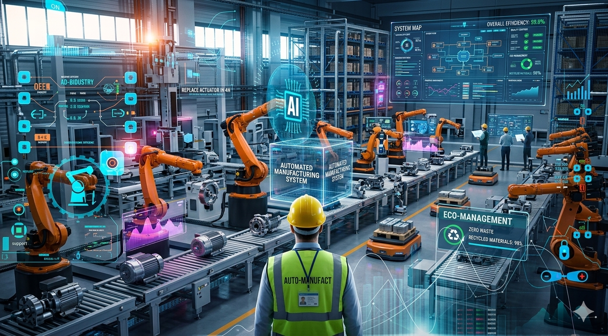

Manufacturing Automation
Manufacturing Automation
Manufacturing stands at the intersection of AI transformation and technological revolution. Unlike retail's visible checkout automation or back office data processing, manufacturing automation is fundamentally reshaping the factory floor through physical AI, advanced robotics, and intelligent systems. The changes are profound and accelerating faster than most anticipated.
The Market is Booming
Global Industrial Robot Market
The global market value of industrial robot installations has reached an all-time high of US$ 16.7 billion. This isn't a niche trend—it's a comprehensive industrial restructuring.
Manufacturing jobs have been declining since February 2023, now reaching the lowest level since the onset of the COVID 19 pandemic. The U.S. manufacturing industry lost 78,000 jobs over the past year with 12,000 cuts in August alone.
The Job Displacement Crisis
Sectors with high volume production and repetitive tasks, such as automotive, semiconductors, electronics, aerospace and pharmaceuticals, are experiencing the highest adoption of AI and automation.
Nearly a third of job losses in that time period came not from jobs going overseas—but from machines taking over. Before, it was mostly about physical labor. Now, even jobs involving decision making or monitoring are being automated with AI and smart systems.
The specific jobs at greatest risk:
- Assembly line workers
- Quality control inspectors
- Material handlers
- Welders (in repetitive tasks)
- Machine operators (traditional)
- Packaging and labeling workers
- Warehouse workers
Physical AI: The Inflection Point
We are witnessing a fundamental shift in what robots can do. Recent advances in artificial intelligence, vision systems and robotics hardware are enabling a new generation of more intelligent and adaptable machines. Physical AI is driving a new phase of industrial automation, offering a powerful solution to manufacturing challenges like rising costs, labour shortages and shifting customer demands.
Breakthroughs in how robots can understand the real world, reason and plan actions are fueling the transition from research and development to commercial deployment across sectors, including manufacturing. Nvidia CEO Jensen Huang said the "ChatGPT moment for physical AI is here," marking an inflection point in the robotics space.
Humanoid Robots: No Longer Science Fiction
Pioneered by the automotive industry, applications in warehousing and manufacturing are coming into focus worldwide. Today, companies and researchers are moving beyond prototypes to deploy humanoids in real life. Hyundai Motor Group debuted its Atlas humanoid robot for production settings, with plans to gradually deploy them across its operations.
Interest in humanoid robots climbed to 13% for 2026. These are viewed as solutions for complex assembly and logistics in environments originally built for humans.
The Technologies Driving Transformation
Autonomous Mobile Robots (AMRs)
Autonomous Mobile Robots are fast becoming the backbone of lean, flexible manufacturing. By taking over the repetitive, time consuming task of moving materials, AMRs give human workers more time to focus on the skilled, value added stuff. The global AMR market is projected to reach $13 billion by 2029, driven by increasing demand for flexible automation in manufacturing and logistics.
AI Powered Adaptability
Self operating systems and AI powered adaptability: Machines are smarter than ever, with AI that helps them adapt and learn on the job. The result? Less downtime and more effective solutions. Industry 4.0 is here, linking machines, sensors, and systems in real time for data driven decisions that optimize production on the fly.
Large Language Models (LLMs)
The most significant momentum is found in Large Language Models (LLMs), which saw a massive jump from 16% interest in 2025 to 35% in 2026. This surge suggests manufacturers are rapidly moving toward complex, language based diagnostic and training tools. They are primarily used for knowledge management and creating worker "copilots".
Lights Out Manufacturing
Implementing lights out manufacturing can lead to a significant decrease in operational expenses, with some organizations reporting up to 45% cost reduction. Lights out manufacturing is how forward thinking brands are switching on their competitive edge.
Real World Deployment: Amazon's Example
Amazon's Robotic Fleet Impact
- 1M+ robots across 300 fulfillment centers
- 25% boost in efficiency
- 10% increase in travel efficiency
- 30% more skilled jobs created at test sites
Amazon has over a million robots across its 300 fulfillment centres. They collaborate with human employees to handle repetitive tasks, like sorting, lifting and transporting packages. Robotic packing lines also help minimize packaging waste. These systems have already led to impressive results in pilots, including faster delivery times and a 25% boost in efficiency. Managing the entire fleet of on site mobile robots has increased travel efficiency by 10%. Amazon also created 30% more skilled jobs at its test site.
The Workforce Shift: From Elimination to Transformation
Robotics and autonomous systems will be major sources of job displacement. But this displacement is not just a disappearance – it is a transition. Along with AI and other digitalization, they will also drive the creation of new, skilled roles. For example, machine operators will become robot technicians, logistics teams will coordinate mobile robots, maintenance teams will shift to predictive maintenance, and manufacturing engineers will focus on training and optimizing AI and robotics systems.
The Skills Gap Crisis
Despite the opportunity, there's a critical shortage of workers prepared for the new manufacturing landscape. By 2033, U.S. manufacturers may need as many as 3.8 million new workers. However, issues around attracting, retaining and finding talent have plagued the industry. Researchers predict as many as 1.9 million jobs could remain unfilled if manufacturers are unable to address the skills and applicant gaps.
Employers around the world are struggling to find people with the specialized skills required. These unfilled jobs leave existing staff covering extra shifts, with rising stress and fatigue across all sectors.
Investment in Workforce Development
Some companies are stepping up: Companies like Flex and Siemens have agreed to each provide $1.5 million over a three year period to support the Massachusetts Institute of Technology's Initiative for New Manufacturing, which aims to support job creation.
Not only will we see a growing emphasis on collaborative technologies in 2025, such as collaborative robots that augment workforce gaps, but we'll also see a growing emphasis on workforce development. We'll see more action around engaging the next generation of manufacturers earlier in their lives. For more immediate impact, we'll see more manufacturers looking to upskill their workers to give them the training needed to work alongside advanced technologies.
The Hybrid Manufacturing Future
Most manufacturers now believe the best model isn't all human or all robot—it's both. Hybrid teams are where machines handle the repetitive, risky, or precision tasks, and humans manage, adapt, and improve the processes around them. This allows companies to scale up without losing flexibility. And it makes employees part of the system, not pushed out by it.
Cybersecurity Risks in Automation
Automation comes with vulnerability: Manufacturing has been the most targeted industry for the last four years, according to IBM's X Force 2025 Threat Intelligence Index, with a high amount of ransomware attacks such as extortion and data theft. In August, Jaguar Land Rover suffered a cyberattack that halted production across its global operations for five weeks, resulting in $260 million in cyber related costs and a 24% decline in revenue.
Adoption Trends: The Pace is Accelerating
Confidence in Innovation: Manufacturers "not planning" to implement emerging tech dropped from 21% to 17% YoY, indicating that staying stationary is no longer a viable strategy. Manufacturers recognize these technologies are essential for resilience against rising operational risks and inflation.
The vast majority plan to invest 20% or more of their improvement budgets on smart manufacturing initiatives, including automation hardware, data analytics, sensors and cloud computing. Participants viewed smart manufacturing as the "primary driver of competitiveness" over the next three years.
Major Company Initiatives
Caterpillar this week announced at CES in Las Vegas that it will team with Nvidia to equip its machines, job sites and factories with AI to create "safer, leaner, more resilient production systems."
The Critical Success Factor: Worker Acceptance
In this transformation process, employers benefit from taking their human workforce on board. The close cooperation with employees in implementing robots plays a crucial role to ensure acceptance – both in industrial manufacturing settings as well as in the manifold service applications. The benefits that robots deliver, such as tackling labor shortages, taking away routine tasks or opening up new career opportunities, mean that they will be accepted as allies in the workplace.
The Long Term Perspective
In the long run, new technology has typically made us more productive, but in the short run, it can lead to significant disruption as people need to switch industries or occupations, and frequently retrain and learn new skills. The best safeguard for both workers and employers is steady investment in skills, so people are prepared to move into the roles that the market continues to demand.
Bottom Line
Key Takeaway
Manufacturing automation is not coming—it's here and accelerating at record pace. The factories of 2030 will look fundamentally different, but they won't be empty. They'll be staffed by workers trained in robotics management, AI oversight, predictive maintenance, and advanced problem solving. The question for manufacturing workers isn't whether automation will affect them—it's whether they'll be part of building the future or left behind by it.
AI doesn't work on its own—it needs people to set it up, guide it, and interpret what it finds.